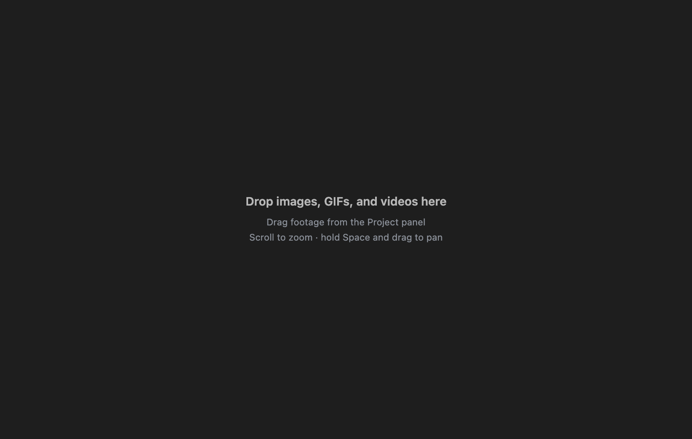
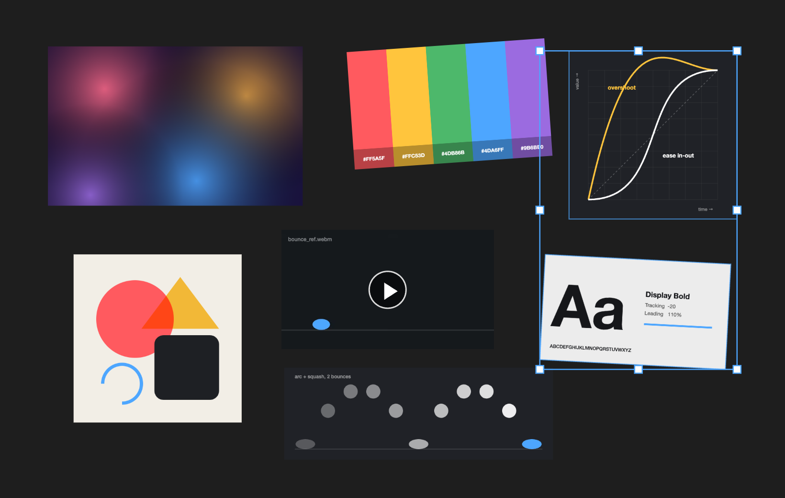

MOTIONREF
A reference board inside After Effects. Drag stills, GIFs, and video in from the Project panel and arrange them next to your comp while you work.
MotionRef is a blank, endless board docked in After Effects. Drop footage on it and it appears at its real size. Move it, scale it, rotate it, stack it, zoom in on details, and pan around. Each project keeps its own board, so your references are waiting the next time you open the .aep. Items link to the original files; nothing is copied into your project. The panel follows After Effects' light or dark appearance, and the board can be white, black, or any color.


PNG, JPEG, GIF, WebP, BMP, SVG, AVIF
Shown as-is. Animated GIFs play and loop on their own.
MP4 and MOV with H.264, MP4 with AV1, WebM (VP8, VP9)
Plays as-is. Videos start paused; click ▶ to play. They loop, muted.
PSD, TIFF, TGA, HEIC, OpenEXR, JPEG 2000, Illustrator, PDF
Converted to a preview with macOS's built-in tools the first time they're added.
ProRes, HEVC
Converted to a playable H.264 preview. Codecs macOS can no longer read, like QuickTime Animation, get a still preview frame rendered by After Effects.
Previews are cached in
~/Library/Caches/MotionRef and rebuilt when the source
file changes; the original is never touched. Previews don't keep
transparency. Image sequences show their first frame. Comps, solids,
and audio aren't added.
Adding
Select footage in the Project panel and drag it onto the board. Several items land in rows, in Project panel order, from where you drop them. Right-clicking the board offers Add Selected from Project too.
Selecting
Moving, resizing, rotating
Several selected items share one transform box, so they move, scale, and rotate together.
Getting around
Right-click menu
Play / Pause, Bring to Front, Send to Back, Reverse Order (flips the reading order of the selected items), Reset Size, Reveal in Finder, Delete, Zoom to Fit, and Zoom to 100%. At the bottom, Background sets the board to Match After Effects (the default), White, Black, or a custom color from a picker; the choice applies to every project.
- Install the extension — open the
.zxpwith a ZXP installer (aescripts ZXP Installer is free). - Restart After Effects and open Window → Extensions → MotionRef.
- Click the board once so the keyboard shortcuts reach it. Until then After Effects keeps its own (Space still previews your comp). Zooming and middle-drag panning work either way.
Boards are saved per project in
~/Library/Application Support/MotionRef/boards/. A file
that's moved or renamed shows as a "Missing" placeholder until it's
back.
The extension is signed with a self-signed certificate — your ZXP installer may show an "unverified publisher" notice. That's expected.
After Effects 2022 or later (developed and tested on AE 2026) on macOS. Previews rely on tools built into macOS, so Windows isn't supported. Everything runs locally — no accounts, no network calls.